The best fitting curve minimizes the sum of the squares of the differences between the measured and predicted values.
Section 1.5 Using Excel to find best-fit curves
Overview.
In Section 1.1–1.2 we looked at useful mathematical models and formulas that we anticipate seeing repeatedly in the business environment. If we are given equations that model the processes we are interested in, then this approach works. What happens though if we are not given equations? Many important functions in business are quite often defined by data. Examples include past sales, material costs, and consumer demand.
If we are given a data set, we can find a best fitting curve. A straightforward approach is to assume that the data represents the output of a nice formula. In real life applications, we will often see that so-called "noise" can complicate the situation. (Noise is a technical term to describe external unpredictable factors that may cause your data to deviate form the model. For example, if I am looking at sales at a fast food restaurant, our model will have noise from traffic jams and bad weather outside.) For the purpose of this course we will assume that the data will be reasonably nice, although some noise may be evident. The problem of producing a best fitting curve to data can be broken into two pieces:
-
We need to decide what kind of curve, or what model we want to use.
-
We want to be able to set the parameters (the constants) in the model to give the best fit.
Coming up with a theoretical reason why we want to use a particular model in a given case forms the content of a large number of your business courses, both courses you have already taken and courses you are yet to take. The models that come up repeatedly in the theoretical courses are given names and used without redoing the theoretical foundation for the model. (This is why we introduced the normal distribution and the logistic growth function, neither of which looks like a simple equation.) In this course, we will be happy with simple heuristic arguments on which model to choose.
The second half of the problem is deciding how to choose the parameters to give the curve that does the best job of fitting the data. A moment of reflection shows deciding on the correct definition of “best fitting” is a nontrivial task beyond the scope of this course. For the time being we will accept the standard definition:
We will come back to that definition later in the course, when we know more calculus, but for now we simply note that it is the standard definition, and is used by Excel. Instead, we will focus on using Excel to produce a best fitting curve of the appropriate model. Excel has a preprogrammed feature that will find the best fitting equation for a data set for a select number of functions:
We will show how to find an equation for a data set, assuming we know what model would be the best one to represent the data.
Subsection 1.5.1 Using Excel to find a best-fit line
Subsubsection 1.5.1.1 Find the line
For a first example, we are running a widget factory and have the following data on employee performance:
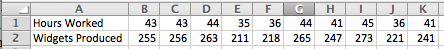
Aside
We would like a formula for widgets produced as a function of hours worked. Since we can see two entries each, for 36, 43, and 44 hours worked, there cannot be a function that hits all our data exactly. While we expect a linear function, we are not surprised if there is random noise, as a worker may take a break, or be particularly focused on a given day. We start by creating a scatterplot for my data.
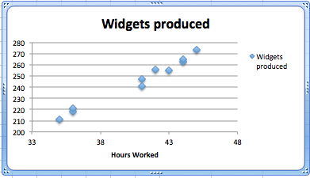
We right click (control-click on a Mac) on one of the data points and we get a contextual menu. We select Add Trendline.
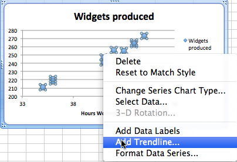
Subsubsection 1.5.1.2 Produce the equation of the line
When adding a trend line, we need to select from a number of options. The first option concerns the mathematical model we want to choose. Given that we suspect the number of widget produced will be roughly proportional to the hours worked, we want to use a linear model, so we make that choice. Under options, we want to display the equation on the chart.
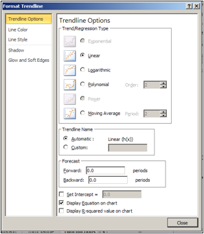
We have added a linear trend line to the graph and can also see the equation for the line. We could use that equation to plan how many hours we want our workers on the job based on the number of widgets we expect to sell.
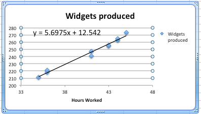
Subsubsection 1.5.1.3 Bring the equation of the line back to the chart
Having found a best fitting line, I want to copy the equation back into my spreadsheet and to be able to compare the values in my data with the projections from my equation. You should notice that the equation Excel produces in the chart is written in standard mathematical notation, while the corresponding equation in cell B3 is in Excel notation. (In Excel notation we need a symbol for multiplication rather than simply putting a number and variable together. In Excel notation, we also use a cell reference, B1, rather than a variable, x.)
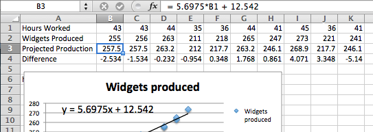
Subsection 1.5.2 Checking and improving our equations
When finding the best fitting curve to data we have gathered, we need to pay attention to the model we have chosen and to the range to which we want to apply it. In our example, the linear fit looks pretty good. However, we should be careful about using it on too wide a domain. According to our model, a worker who works no hours produces 12.52 widgets a week, which is obviously silly. In the other direction, it predicts that a worker who worked 168 (= 7 × 24) hours a week would produce almost 970 widgets, instead of predicting a collapse from exhaustion.
The other issue is the choice of a model. We chose a linear model. An argument could easily be made for a proportional model. (A worker who works no hours produces no widgets.) We can switch to the proportional model by setting the \(y\)-intercept to 0 in options for the trend line. Then the equation is
\begin{equation*}
(\text{Widgets Produced}) = 6.00026*(\text{Hours Worked})
\end{equation*}
instead of our original equation of
\begin{equation*}
(\text{Widgets Produced}) = 5.6975*(\text{Hours Worked})+12.54\text{.}
\end{equation*}
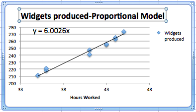
We should also be careful about trying to get a better fit by using an inappropriate model. In our case, we can get a better fit by allowing the curve to be a 6th degree polynomial. However the resulting equation does not make sense. It predicts that a worker will produce about quarter million widgets with a 1-hour work week, and \(-1500\) widgets with a 55-hour work week.
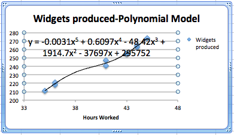
Subsection 1.5.3 Fitting the Consumer Price Index (CPI) to a best fitting curve; an extended example
For our second example, we will look at the consumer price index and try and fit it to a model. This example will illustrate several issues we need to keep in mind when building models. We obtained data for the consumer price index from
The data from 1960 to 2011 is in the worksheet Section-1-5-Examples.xlsx.
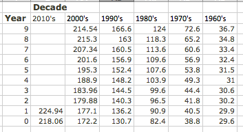
Since we expect prices to rise as a percentage of the current prices, we expect the CPI to be modeled by an exponential curve. We start by selecting the data, producing a scatterplot, and adding a best fitting curve using an exponential model. We will always select the option to show the equation on the chart.
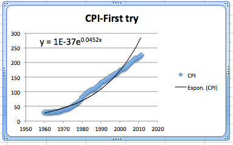
This first attempt gives an exponential formula, but it is unsatisfactory for a number of reasons.
-
That constant only shows one significant digit, which is not enough to make meaningful predictions.
-
The font size is too small to easily read off the resulting equations.
-
The constant coefficient is ridiculously small because it gives the projected value of the index in the year o.
-
The graph does not look like a very good fit. The plot of the numbers actually looks as though it represents three different graphs.
We will work through the problems one at a time.
Subsubsection 1.5.3.1 Number of significant digits for equation constants
The first problem is that the equation Excel has given us does not have enough significant digits to make useful predictions. We want to right click on the equation, select “Format Trendline Label”. We are given a dialog box that lets us make formatting options. Since the lead coefficient is so small, we want the numbers formatted in scientific notation. We choose 4 digits beyond the decimal point in that notation.
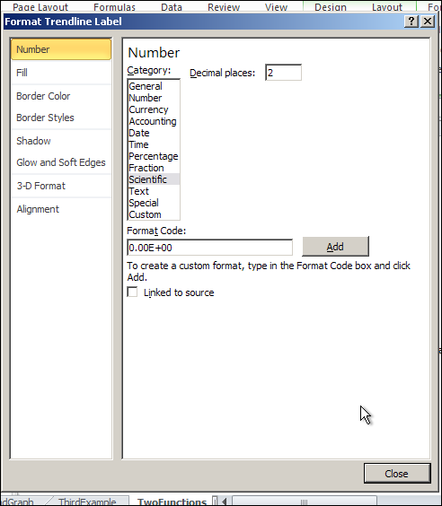
This gives us a better equation. It should be noted that our pictures in this book use the font option in the formatting to use a larger sized font.
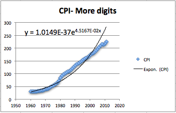
Subsubsection 1.5.3.2 Setting the base point of a variable
The next issue to deal with is adjusting the year. Looking at the raw data, the CPI was 100 sometime in 1983. Thus we simply add an extra column to our spreadsheet where the adjusted year is the current year minus 1983. In our graph, we also adjust the labels so a reader can still understand our chart.
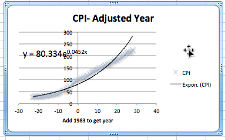
Subsubsection 1.5.3.3 Selecting data for one model
Now we want to look at the more serious question, the one that says the model does not fit very well. Looking at our data, the inflation rate seems to fall into roughly 3 blocks, the years before 1973, the years from 1973-1983, and the years after 1983. We would want to go back to our economics classes and find an argument that says this division of years is reasonable. Using the same menu that lets us add a trend line, we can edit the source data. We want to restrict to the years after 1983. In our case, that means restricting to rows 1 to 30.
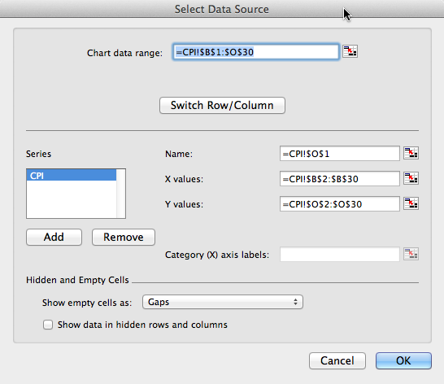
This breaks the data into two pieces. The first piece is the period from 1983 till 2011. As we see, the exponential model fits quite well in that case.
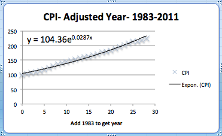
The second piece is the period from 1973 till 1982. Once again, the exponential model fits quite well over that period. Notice that the exponent is quite different in the two periods.
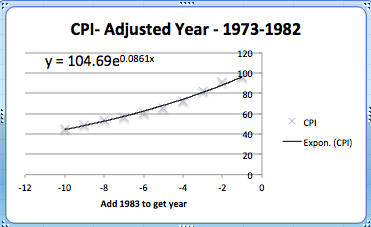
The obvious question that arises is to figure out what happened in 1983 that caused the economic model to shift. That question is beyond the scope of this course.
Reading Questions 1.5.4 Reading Check
1. Reading check, Using Excel to Find Best Fit Curves.
This question checks your reading comprehension of the material is section 1.5, Using Excel to Find Best Fit Curves, of Business Calculus with Excel. Based on your reading, select all statements that are correct. There may be more than one correct answer. The statements may appear in what seems to be a random order.
-
We can change the number of digits shown in the trendline equation.
-
When interpreting a trendline we need to be careful about the domain where the function makes sense.
-
With an exponential model, it does not matter what we choose as the base year.
-
It does not matter which model we use with trendline.
-
The trendline equation can simply be copied into a cell for computation.
-
The best fitting curve minimizes the sum of the squares of the differences between the measured and predicted values.
-
In Excel we ’Add a Trendline’ to a scatterplot to find a best fitting curve.
-
None of the above
Exercises 1.5.5 Exercises: Using Excel to find best fit curves
1.
We have the following data on widget production:
| Month | Jan | Feb | Mar | Apr | May |
| Production | 16,597 | 30,687 | 48,441 | 55,751 | 79,606 |
-
Find the best fitting linear function for the data.
-
Give the production value that function predicts for May.
-
Give the production value that function predicts for July.
Solution.
-
Create a scatter plot for the data. Then use the menu to go to Chart — Chart layout — Trendlines. Find the linear approximation and under options choose to display the function.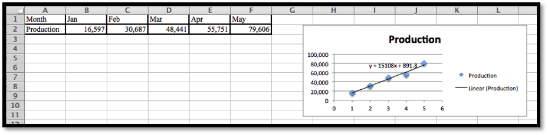Excel automatically changes the months into numerical values.The best linear function for the data is \(y = 15108x + 891.8\text{.}\)
-
Create a new table using the function to determine the predicted production levels.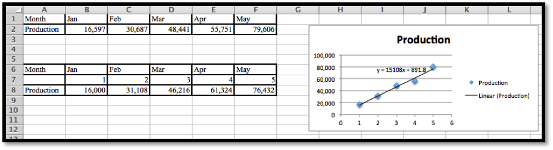Excel needs x to be a number, so we need to insert a row and provide the appropriate numerical values: 1 for Jan, 2 for Feb, etc.The predicted production for May is 76,432.
-
To find the production level for July we enter
x = 7in the table and compute the output.The linear model predicts a production of 106, 648 for the month of July.
2.
We have the following data on gizmo sales:
| Month | Jan | Mar | Apr | July | Aug |
| Units sold | 1,505 | 9,042 | 13,018 | 21,873 | 22,636 |
-
Find the best fitting linear function for the data.
-
Extend the chart to give the projected sales for each month from January through September. (You need to add a row for predicted sales, and also add a number of columns for missing months.)
3.
We have the following data on gadget revenue:
| Units sold | 3,000 | 5,000 | 7,000 | 9,000 | 11,000 |
| Revenue | 16,161 | 24,783 | 34,484 | 38,014 | 33,030 |
-
Find the best fitting linear function for the data.
-
Find the best fitting quadratic function for the data.
-
The data fits a quadratic function better than a linear function. With a quadratic model we do not maximize revenue by selling as many units as possible. Explain why this is reasonable in the real world.
-
Project the revenue for selling 15,000 units with both linear and quadratic models.
Solution.
-
We can do scatterplots and use the linear trendline find the models we need.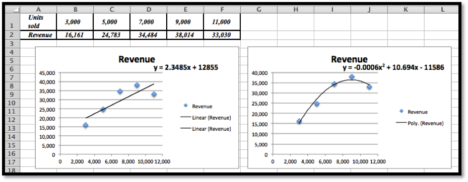The linear model is \(y = 2.3485x + 12855\text{.}\)
-
We can do scatterplots and use the polynomial trendline of degree 2 to find the model we need. (See the second image in part (a).)The quadratic (polynomial of degree 2) model is \(y = -0.0006x^2 + 10.694x - 11586\)The graphs show that the quadratic equation is the better model and follows the data more closely.
-
The revenue function is given by price * quantity. If we offer more units the price will eventually go down. If the price goes down faster than the number of new items sold, the revenue will at some point go back down.
-
Plug \(x = 15000\) into \(y =-0.0006x^2 + 10.694x - 11586\text{,}\) and we get $13, 824 for the quadratic model.[You can use Excel, a calculator or Wolfram Alpha to do these last computations.]
4.
In building water tanks, design considerations indicate the weight of the dry tank should be roughly a power function of the capacity. I am interested in building a larger tank than I have before. I have the following data between capacity and weight:
| Gallons | 1,000 | 5,000 | 7,000 | 9,000 | 17,000 |
| Weight | 103 | 878 | 1,339 | 1,927 | 4,496 |
-
Find the best fitting power function for the data.
-
Use your power function to estimate the weight of a tank that holds 40,000 gallons.
-
Find the best fitting linear function for the data.
-
Use your linear function to estimate the weight of a tank that holds 40,000 gallons.
-
Visually, both curves seem to fit the data quite well, yet they make noticeable different predictions for the weight of a larger tank. Which prediction would you use? Justify your answer.
5.
I am looking at sales figures for a new product, the gizmo. The sales figures seem to be growing at an exponential rate.
| Month | Jan | Apr | July | Oct | Jan |
| Units sold | 1082 | 1680 | 2662 | 3783 | 6430 |
-
Find the best fitting exponential function for the data.
-
Using your function, predict sales for the July after the data was collected.
Solution.
-
Using the scatterplot and the trendline from the Chart menu, we choose Exponential Trendline and display the function. Note that we do need to change the months to the appropriate numerical value. Excel would just replace them by consecutive numbers.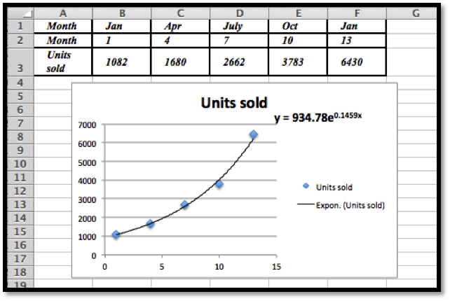The best fitting exponential curve given by Trendlines is \(y = 934.78e^{0.1459x}\text{.}\)
-
To find the predicted units sold for July we would need \(x = 19\text{.}\)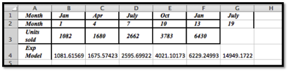Using Excel we see that the predicted number of units sold is 14,949.
Exercise Group.
Excel has a limited set of models that can be used for trend lines to automatically fit curves to data. In later sections we will look at how to we can use calculus to find best fitting curves for other models. Until we develop those techniques, we can make a guess at parameters that will make curves fit.
6.
The unit sales of widgets can be expected to follow a logistic model, with rapid growth of sales, but with eventual saturation of the market so that there is a cap on the market. In such a case the sales should be modeled by a logistic equation, of the form
\begin{equation*}
\Sales(\Time)=\text{MarketCap}/(1+\text{adjustment}*exp(-\rate*\Time))\text{.}
\end{equation*}
We have the following data on sales:
| time(years) | 0 | 2 | 4 | 6 | 8 |
| sales | 1000 | 5610 | 14,845 | 19,095 | 19,870 |
Find values of the parameters MarketCap, adjustment, and rate to reasonably fit the data.
7.
The unit sales of an article of clothes for adults can be expected to follow the model of a normal distribution. In such a case the sales should be modeled by a normal equation, of the form
\begin{equation*}
\Sales(\text{size})=\text{MaxPerSize}*\exp\left(-\left(\left(\frac{\text{Size}-\text{Mean}}{\text{StandardDeviation}}\right)^2\right)\right)\text{.}
\end{equation*}
(Note we need an extra set of parenthesis to keep the order of operations correct.) We have the following data on sales:
| size | 7 | 8 | 9 | 10 | 11 | 12 |
| Weight | 360 | 3,390 | 12,820 | 20,000 | 12,826 | 3,375 |
Find values of the parameters MaxPerSize, Mean, and StandardDeviation to reasonably fit the data.
Solution.
The initial plot shows that the distribution is normal:
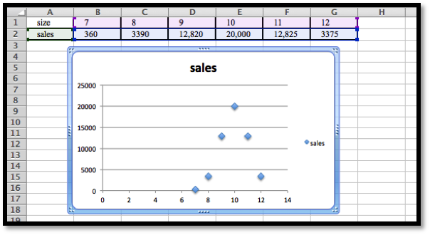
If we use \(\Sales (x)= \text{MaxPerSize}*e^{-\left(\left(\frac{x-10}{\text{STDev}}\right)^2 \right)}\text{,}\) then if \(x = 10\) we have \(\Sales (10)= \text{MaxPerSize}\text{,}\) and so \(\text{MaxPerSize} = 20,000\text{,}\) hence we have that
\begin{equation*}
\Sales (x)= 20,000*e^{-\left(\left(\frac{x-10}{\text{STDev}}\right)^2 \right)}\text{.}
\end{equation*}
Let \(x = 11\text{,}\) then \(12825= 20,000*e^{\left(\left(\frac{-1}{\text{STDev}}\right)^2 \right)}\text{.}\)
Hence \(e^{\frac{-1}{\text{STDev}^2}}=\frac{12825}{2000}\text{.}\) Then \(\frac{-}{\text{STDev}^2}=\ln\left(\frac{12825}{20000}\right)\)
Comment: We will develop some methods to solve problems such as this using Excel in Section 6.4 in Chapter 6.
8.
The populations of the states can be found online for both the 2000 and 2010 censuses.
-
Explain why one would guess the 2010 population of a state is roughly a linear function of the 2000 population of the state.
-
Download the 2000 and 2010 populations of the 50 states. Produce a scatterplot that has the 2010 population as a function of the 2000 population. Find the equation of a best fitting curve for the data.
-
Explain what the \(y\)-intercept means in terms of people moving to or away from states with large populations.
9.
The tax revenues of the states can be found online. (A good site is the census bureau at http://www.census.gov/govs/state/.)
-
Explain why one would guess the 2010 tax revenue of a state is roughly a linear function of the 2010 population of the state.
-
For 10 states, produce a scatterplot that has the 2010 tax revenue as a function of the 2010 population. Find the equation of a best fitting curve for the data.
-
Explain what the \(y\)-intercept means in terms of the relationship of the size of the state and the tax burden per person.
Exercise Group.
Projects:
10.
Find the data for the consumer price index and the Dow Jones Industrial average at the start of the year for the past 50 years. Over that time, what is the best linear relationship between the two indices? To make your equation easier to understand, scale the indices so they both start at 100 on the same day.
11.
Pick your two favorite stocks and chart their prices on the opening days for a period of 30 years. How well are their prices modeled as a linear model of each other? See if you can find two stocks that seem to be inversely proportional to each other.